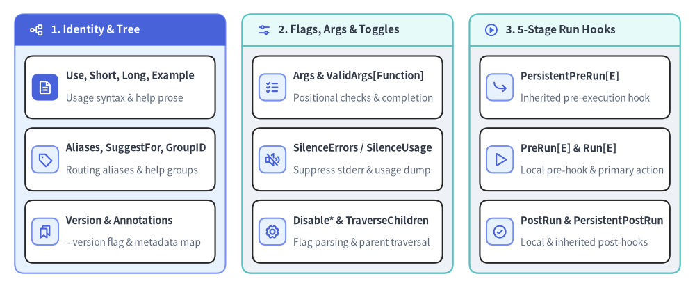
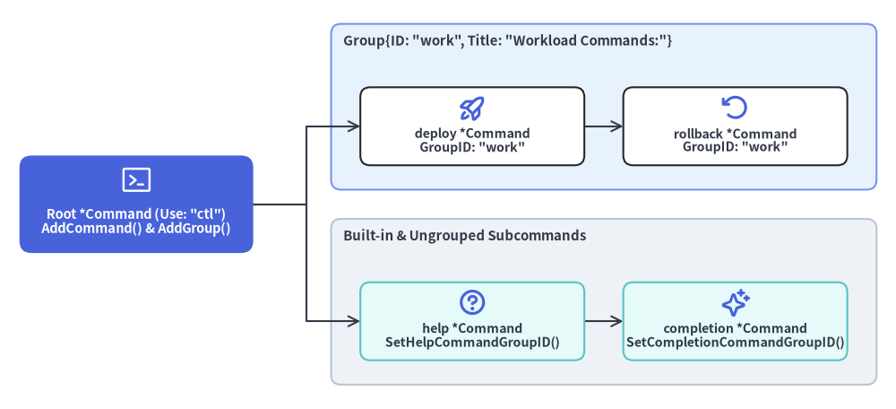

Command Struct, Tree Topology & Command Groups
The cobra.Command struct (command.go) is the central data structure of Cobra. Every root application binary, intermediate category subcommand, leaf action command, and additional help topic is represented as a *cobra.Command node in an in-memory n-ary tree.

Source Code
from drawlib.canvas import save, setup
from drawlib.icons import phosphor
from drawlib.smartarts import CardList, Panel
from drawlib.styles import Colors, Styles
setup(width=188, height=78)
_ = Colors
col_specs = [
(
4.0,
"1. Identity & Tree",
Styles.PrimaryNeutral,
Styles.PrimaryFlat,
Styles.WhiteBold.patch(text_size=11.0),
phosphor.tree_structure,
Styles.WhiteBold,
[
("Use, Short, Long, Example", "Usage syntax & help prose", phosphor.file_text, True),
("Aliases, SuggestFor, GroupID", "Routing aliases & help groups", phosphor.tag, False),
("Version & Annotations", "--version flag & metadata map", phosphor.bookmarks, False),
],
),
(
65.5,
"2. Flags, Args & Toggles",
Styles.Neutral,
Styles.SecondaryNeutral,
Styles.DarkBold.patch(text_size=11.0),
phosphor.sliders_horizontal,
Styles.PrimaryBold,
[
("Args & ValidArgs[Function]", "Positional checks & completion", phosphor.list_checks, False),
("SilenceErrors / SilenceUsage", "Suppress stderr & usage dump", phosphor.speaker_slash, False),
("Disable* & TraverseChildren", "Flag parsing & parent traversal", phosphor.gear, False),
],
),
(
127.0,
"3. 5-Stage Run Hooks",
Styles.Neutral,
Styles.SecondaryNeutral,
Styles.DarkBold.patch(text_size=11.0),
phosphor.play_circle,
Styles.PrimaryBold,
[
("PersistentPreRun[E]", "Inherited pre-execution hook", phosphor.arrow_bend_down_right, False),
("PreRun[E] & Run[E]", "Local pre-hook & primary action", phosphor.play, False),
("PostRun & PersistentPostRun", "Local & inherited post-hooks", phosphor.check_circle, False),
],
),
]
for x0, title, body_style, hdr_style, hdr_text_style, hdr_icon, hdr_icon_style, items in col_specs:
panel = Panel(
title,
"",
style=body_style,
header_style=hdr_style,
text_style=hdr_text_style,
icon=hdr_icon,
icon_style=hdr_icon_style,
header_variant="filled",
header_height=8.5,
)
panel.draw((x0, 4.0), width=57.0, height=70.0, align="bottom_left")
inner_xy, inner_w, inner_h = panel.get_content_box(
(x0, 4.0),
width=57.0,
height=70.0,
padding=(2.8, 2.8),
align="bottom_left",
)
cards = CardList(
style=Styles.White,
text_style=Styles.DarkBold.patch(text_size=10.5),
description_style=Styles.Muted.patch(text_size=10.0),
badge_shape="rounded_rect",
badge_style=Styles.PrimaryNeutral,
icon_style=Styles.PrimaryBold,
direction="vertical",
spacing=2.6,
)
for mod_name, mod_desc, mod_icon, is_focal in items:
if is_focal:
cards.add(
mod_name,
mod_desc,
icon=mod_icon,
badge_style=Styles.PrimaryFlat,
icon_style=Styles.WhiteBold,
)
else:
cards.add(mod_name, mod_desc, icon=mod_icon)
cards.draw(inner_xy, width=inner_w, height=inner_h, align="bottom_left")
save()
structcobra.Command#
Defines a CLI command node (command.go:L54-L260). A Command struct is instantiated as a struct literal (&cobra.Command{...}) and wired into a command hierarchy via AddCommand().
type Command struct {
// Identity, Documentation & Grouping
Use string
Aliases []string
SuggestFor []string
Short string
GroupID string
Long string
Example string
Annotations map[string]string
Version string
// Argument Validation & Shell Completion
ValidArgs []Completion
ValidArgsFunction CompletionFunc
Args PositionalArgs
ArgAliases []string
BashCompletionFunction string
CompletionOptions CompletionOptions
// Execution Lifecycle Hooks (Executed in order: PersistentPreRun -> PreRun -> Run -> PostRun -> PersistentPostRun)
PersistentPreRun func(cmd *Command, args []string)
PersistentPreRunE func(cmd *Command, args []string) error
PreRun func(cmd *Command, args []string)
PreRunE func(cmd *Command, args []string) error
Run func(cmd *Command, args []string)
RunE func(cmd *Command, args []string) error
PostRun func(cmd *Command, args []string)
PostRunE func(cmd *Command, args []string) error
PersistentPostRun func(cmd *Command, args []string)
PersistentPostRunE func(cmd *Command, args []string) error
// Flag Parsing, Error Handling & Suggestion Toggles
FParseErrWhitelist FParseErrWhitelist
TraverseChildren bool
Hidden bool
Deprecated string
SilenceErrors bool
SilenceUsage bool
DisableFlagParsing bool
DisableAutoGenTag bool
DisableFlagsInUseLine bool
DisableSuggestions bool
SuggestionsMinimumDistance int
}
1. Identity, Documentation & Grouping Fields#
| Field | Type | Description |
|---|---|---|
Use |
string |
One-line usage signature. The first whitespace-delimited token becomes cmd.Name() (e.g., "deploy [flags] <env>" -> Name() == "deploy"). Recommended syntax uses [ ] for optional args, ... for repeatable args, | for mutually exclusive choices, and { } for required mutually exclusive sets. |
Aliases |
[]string |
Alternative command names accepted during command resolution (findNext) in place of Name(). Displayed in help output under Aliases:. |
SuggestFor |
[]string |
Command names (such as common typos or competitor CLI verbs like "remove" or "rm" on a delete command) that are not executable aliases, but trigger "Did you mean this?" suggestions via SuggestionsFor(). |
Short |
string |
Concise one-line summary shown in the parent command's Available Commands: table and shell completion descriptions. |
GroupID |
string |
ID of a cobra.Group registered on the parent command via parent.AddGroup(). If set to a non-empty string not registered on the parent, ExecuteC() panics (checkCommandGroups()). |
Long |
string |
Full multi-line description rendered by help <command> / <command> --help and cobra/doc generators. Falls back to Short when empty. |
Example |
string |
Multi-line usage examples rendered under the Examples: section of usage/help output and documentation. |
Annotations |
map[string]string |
Arbitrary application metadata map. Setting Annotations[cobra.CommandDisplayNameAnnotation] overrides cmd.DisplayName() in help output. |
Version |
string |
Version string for this command. When non-empty, InitDefaultVersionFlag() automatically registers --version (and -v if -v is unused) and prints versionTemplate when passed. |
2. Flags, Arguments, Completion & Behavior Fields#
| Field | Type | Description |
|---|---|---|
ValidArgs |
[]Completion |
Static slice of valid positional arguments for shell completion (and checked by OnlyValidArgs). Elements may include a \t-separated description via CompletionWithDesc(). Mutually exclusive with ValidArgsFunction. |
ValidArgsFunction |
CompletionFunc |
Dynamic Go callback func(cmd *Command, args []string, toComplete string) ([]Completion, ShellCompDirective) invoked by __complete to compute positional argument completions at runtime. |
Args |
PositionalArgs |
Positional argument validator func(cmd *Command, args []string) error (see 04. Positional Args). When nil, Find() applies legacyArgs and ValidateArgs() allows arbitrary args. |
ArgAliases |
[]string |
Hidden aliases for ValidArgs accepted by Bash completion without being actively suggested in completion menus. |
BashCompletionFunction |
string |
Custom raw Bash script functions injected into legacy GenBashCompletion() V1 output. Prefer ValidArgsFunction for cross-shell portability. |
CompletionOptions |
CompletionOptions |
Configures the built-in completion command (DisableDefaultCmd, DisableNoDescFlag, DisableDescriptions, HiddenDefaultCmd, DefaultShellCompDirective). |
FParseErrWhitelist |
FParseErrWhitelist |
Alias of pflag.ParseErrorsAllowlist (struct{ UnknownFlags bool }). When UnknownFlags: true, ParseFlags() ignores unknown flags instead of returning an error. |
TraverseChildren |
bool |
When true on the root command, ExecuteC() uses Traverse() instead of Find(), parsing local and persistent flags on every intermediate parent command along the path before dispatching to the target child command. |
Deprecated |
string |
Deprecation notice message. When non-empty, hides the command from Available Commands: (IsAvailableCommand() == false), omits it from completions, and prints "Command <name> is deprecated, <msg>" when invoked. |
Hidden |
bool |
When true, hides the command from help output, shell completions, and cobra/doc generation while keeping it executable if typed explicitly. |
SilenceErrors |
bool |
When true (on either the executed command or root command), prevents ExecuteC() from automatically printing Error: <err> to ErrOrStderr() when execute() returns an error. |
SilenceUsage |
bool |
When true (on either the executed command or root command), prevents ExecuteC() from automatically dumping UsageString() when RunE or flag/arg validation returns an error. |
DisableFlagParsing |
bool |
When true, skips pflag parsing entirely and passes all raw tokens (including -f / --flag) directly to Run / RunE via args []string. |
DisableAutoGenTag |
bool |
When true, suppresses the "Auto generated by spf13/cobra on ..." footer in cobra/doc Markdown, Man, and ReST output. |
DisableFlagsInUseLine |
bool |
When true, prevents UseLine() from automatically appending " [flags]" when the command has available flags. |
DisableSuggestions |
bool |
When true, disables Levenshtein distance "Did you mean this?" typo suggestions on unknown subcommand errors. |
SuggestionsMinimumDistance |
int |
Maximum Levenshtein edit distance to consider a child command name a typo match (defaults to 2 when <= 0). |
3. Execution Lifecycle Hook Fields#
All 10 lifecycle hooks receive (cmd *Command, args []string), where args is the slice of positional arguments remaining after flag extraction. Hooks are only executed on commands where cmd.Runnable() is true (Run != nil || RunE != nil). If both *E and non-E variants are set on the same command, *E takes precedence (if c.RunE != nil { ... } else { c.Run(...) }).
| Hook Field | Signature | Inheritance & Execution Order |
|---|---|---|
PersistentPreRunE / PersistentPreRun |
func(cmd *Command, args []string) [error] |
Stage 1: Inherited by child commands. By default (EnableTraverseRunHooks == false), executes the first defined hook found walking up c -> c.Parent() -> .... When EnableTraverseRunHooks == true, executes all defined ancestor hooks top-down from Root() to c. |
PreRunE / PreRun |
func(cmd *Command, args []string) [error] |
Stage 2: Local to c (not inherited by children). Runs after PersistentPreRun[E] and before ValidateRequiredFlags() and ValidateFlagGroups(). |
RunE / Run |
func(cmd *Command, args []string) [error] |
Stage 3: Primary command workload. Runs after ValidateRequiredFlags() and ValidateFlagGroups() succeed. |
PostRunE / PostRun |
func(cmd *Command, args []string) [error] |
Stage 4: Local to c. Runs immediately after Run / RunE succeeds (skipped if RunE returns an error). |
PersistentPostRunE / PersistentPostRun |
func(cmd *Command, args []string) [error] |
Stage 5: Inherited by child commands. Runs after PostRun[E]. When EnableTraverseRunHooks == true, executes bottom-up from c to Root(). |
structcobra.Group & type cobra.FParseErrWhitelist#
Supporting types declared at the top of command.go (L41-L48):
// FParseErrWhitelist configures Flag parse errors to be ignored
type FParseErrWhitelist flag.ParseErrorsAllowlist
// Group Structure to manage groups for commands
type Group struct {
ID string
Title string
}
| Type / Field | Underlying Type | Description |
|---|---|---|
FParseErrWhitelist.UnknownFlags |
bool |
Ignores unknown --flags during c.ParseFlags(args) instead of failing with unknown flag. Copied onto c.Flags().ParseErrorsAllowlist right before Parse(). |
Group.ID |
string |
Unique identifier matched against child Command.GroupID, SetHelpCommandGroupID(), and SetCompletionCommandGroupID(). |
Group.Title |
string |
Section header title printed in UsageString() above all child commands belonging to Group.ID (e.g., "Basic Commands:", "Cluster Management:"). |

Source Code
from drawlib.canvas import save, setup
from drawlib.diagrams.architecture import ArchitectureDiagram, Node, NodeGroup, PhosphorIcon
from drawlib.styles import Colors, Styles
setup(width=184, height=84)
_ = Colors
d = ArchitectureDiagram(
node_style=Styles.PrimaryBold,
node_text_style=Styles.DarkBold.patch(text_size=10.2),
edge_style=Styles.DarkBold.patch(line_width=1.5),
edge_text_style=Styles.Dark.patch(text_size=10.0),
node_card_style=Styles.White,
)
root_node = d.add(
Node(
"Root *Command (Use: \"ctl\")\nAddCommand() & AddGroup()",
icon=PhosphorIcon.TERMINAL_WINDOW,
icon_size=7.0,
width=48,
height=20,
style=Styles.White,
text_style=Styles.WhiteBold.patch(text_size=10.5),
card_style=Styles.PrimaryFlat.patch(shape_r=2.5),
),
xy=(28.0, 42.0),
)
core_grp = d.add(
NodeGroup(
"Group{ID: \"work\", Title: \"Workload Commands:\"}",
width=112,
height=34,
style=Styles.PrimaryNeutral.patch(shape_r=2.0),
text_style=Styles.DarkBold.patch(text_size=10.8, halign="left", valign="top"),
),
xy=(68.0, 45.0),
)
deploy_node = core_grp.add(
Node(
"deploy *Command\nGroupID: \"work\"",
icon=PhosphorIcon.ROCKET_LAUNCH,
icon_size=6.0,
width=46,
height=16,
card_style=Styles.White.patch(shape_r=2.0),
),
xy=(29.0, 13.0),
)
roll_node = core_grp.add(
Node(
"rollback *Command\nGroupID: \"work\"",
icon=PhosphorIcon.ARROW_COUNTER_CLOCKWISE,
icon_size=6.0,
width=46,
height=16,
card_style=Styles.White.patch(shape_r=2.0),
),
xy=(83.0, 13.0),
)
sys_grp = d.add(
NodeGroup(
"Built-in & Ungrouped Subcommands",
width=112,
height=34,
style=Styles.Neutral.patch(shape_r=2.0),
text_style=Styles.DarkBold.patch(text_size=10.8, halign="left", valign="top"),
),
xy=(68.0, 5.0),
)
help_node = sys_grp.add(
Node(
"help *Command\nSetHelpCommandGroupID()",
icon=PhosphorIcon.QUESTION,
icon_size=6.0,
width=46,
height=16,
card_style=Styles.SecondaryNeutral.patch(shape_r=2.0),
),
xy=(29.0, 13.0),
)
comp_node = sys_grp.add(
Node(
"completion *Command\nSetCompletionCommandGroupID()",
icon=PhosphorIcon.SPARKLE,
icon_size=6.0,
width=46,
height=16,
card_style=Styles.SecondaryNeutral.patch(shape_r=2.0),
),
xy=(83.0, 13.0),
)
d.connect(root_node, deploy_node)
d.connect(root_node, help_node)
d.connect(deploy_node, roll_node)
d.connect(help_node, comp_node)
d.draw((0.0, 0.0))
save()
methodTree Construction & Navigation Methods#
Methods on *Command for building, mutating, and walking the command tree (command.go).
func (c *Command) AddCommand(cmds ...*Command)
func (c *Command) RemoveCommand(cmds ...*Command)
func (c *Command) ResetCommands()
func (c *Command) Commands() []*Command
func (c *Command) Parent() *Command
func (c *Command) Root() *Command
func (c *Command) VisitParents(fn func(*Command))
| Method | Signature | Description |
|---|---|---|
AddCommand |
func (c *Command) AddCommand(cmds ...*Command) |
Attaches one or more child commands to c, sets child.parent = c, recomputes padding widths (commandsMaxUseLen, commandsMaxCommandPathLen, commandsMaxNameLen), propagates c.globNormFunc if present, and marks c.commandsAreSorted = false. Panics with "Command can't be a child of itself" if cmd == c. |
RemoveCommand |
func (c *Command) RemoveCommand(cmds ...*Command) |
Detaches matching child commands (command.parent = nil) and recomputes max padding widths across remaining children. |
ResetCommands |
func (c *Command) ResetCommands() |
Clears c.parent, c.commands, c.helpCommand, and c.parentsPflags to nil (primarily used in test suites). |
Commands |
func (c *Command) Commands() []*Command |
Returns the slice of direct child commands. Lazily sorts c.commands by Name() on first call when cobra.EnableCommandSorting == true. |
Parent |
func (c *Command) Parent() *Command |
Returns the immediate parent *Command, or nil if c is the root command. |
Root |
func (c *Command) Root() *Command |
Recursively climbs c.Parent() to return the top-most root *Command (if c.HasParent() { return c.Parent().Root() }; return c). |
VisitParents |
func (c *Command) VisitParents(fn func(*Command)) |
Invokes fn on c.Parent(), c.Parent().Parent(), and so on up to Root() (does not invoke fn on c itself). |
methodTree & Availability Predicate Methods#
Boolean inspection methods used by ExecuteC(), usage templates, and cobra/doc generators.
func (c *Command) HasParent() bool
func (c *Command) HasSubCommands() bool
func (c *Command) HasAvailableSubCommands() bool
func (c *Command) HasHelpSubCommands() bool
func (c *Command) IsAvailableCommand() bool
func (c *Command) IsAdditionalHelpTopicCommand() bool
func (c *Command) Runnable() bool
func (c *Command) HasExample() bool
| Method | Return Condition | Description |
|---|---|---|
HasParent() |
c.parent != nil |
Returns true if c has been added to a parent command. |
HasSubCommands() |
len(c.commands) > 0 |
Returns true if c has at least one child command (regardless of hidden/deprecated status). |
HasAvailableSubCommands() |
any child.IsAvailableCommand() |
Returns true if at least one child command is visible under Available Commands:. |
HasHelpSubCommands() |
any child.IsAdditionalHelpTopicCommand() |
Returns true if at least one child command qualifies as an Additional help topics: entry. |
IsAvailableCommand() |
Deprecated == "" && !Hidden && c != parent.helpCommand && (Runnable() || HasAvailableSubCommands()) |
Determines whether c is a normal user-invocable command shown in help listings and documentation. |
IsAdditionalHelpTopicCommand() |
!Runnable() && Deprecated == "" && !Hidden && all children are help topics |
Identifies non-runnable documentation-only topic commands (e.g., myapp environment) rendered under Additional help topics:. |
Runnable() |
c.Run != nil || c.RunE != nil |
Returns true if c has a Run or RunE action function. Non-runnable parent commands print help (flag.ErrHelp) when invoked without a subcommand. |
HasExample() |
len(c.Example) > 0 |
Returns true if c.Example is non-empty. |
methodNaming, Path, Alias & Padding Methods#
Methods that extract command names, full CLI paths, invocation aliases, and column widths for tabular help formatting.
func (c *Command) Name() string
func (c *Command) DisplayName() string
func (c *Command) CommandPath() string
func (c *Command) UseLine() string
func (c *Command) CalledAs() string
func (c *Command) HasAlias(s string) bool
func (c *Command) NameAndAliases() string
func (c *Command) UsagePadding() int
func (c *Command) CommandPathPadding() int
func (c *Command) NamePadding() int
| Method | Return Type | Description |
|---|---|---|
Name() |
string |
Extracts the first word of c.Use up to the first space " " (c.Use[:i]). |
DisplayName() |
string |
Returns c.Annotations[CommandDisplayNameAnnotation] if present; otherwise returns c.Name(). |
CommandPath() |
string |
Space-separated path from root to c (c.Parent().CommandPath() + " " + c.Name()), using DisplayName() at the root. |
UseLine() |
string |
Full usage line including parent.CommandPath(), c.Use (with Name() replaced by DisplayName()), and trailing " [flags]" (unless DisableFlagsInUseLine is true or !HasAvailableFlags() exists). |
CalledAs() |
string |
Returns the exact command name or alias string used to invoke c during Find() / Traverse(), or "" if c was not called. |
HasAlias(s string) |
bool |
Returns true if s matches any entry in c.Aliases (respecting cobra.EnableCaseInsensitive). |
NameAndAliases() |
string |
Comma-separated string joining c.Name() and all c.Aliases ("deploy, dep, d"). |
NamePadding() |
int |
Column width for Available Commands: (max(11, c.parent.commandsMaxNameLen)). |
CommandPathPadding() |
int |
Column width for Additional help topics: (max(11, c.parent.commandsMaxCommandPathLen)). |
UsagePadding() |
int |
Column width for Use strings (max(25, c.parent.commandsMaxUseLen)). |
methodCommand Group Management Methods#
Methods on *Command for organizing subcommands into labeled sections in help / Usage output (command.go).
func (c *Command) AddGroup(groups ...*Group)
func (c *Command) Groups() []*Group
func (c *Command) ContainsGroup(groupID string) bool
func (c *Command) AllChildCommandsHaveGroup() bool
func (c *Command) SetHelpCommandGroupID(groupID string)
func (c *Command) SetCompletionCommandGroupID(groupID string)
| Method | Signature | Description |
|---|---|---|
AddGroup |
func (c *Command) AddGroup(groups ...*Group) |
Appends one or more *Group definitions to c.commandgroups. Groups are rendered in Usage() in the order they were added. |
Groups |
func (c *Command) Groups() []*Group |
Returns the slice of *Group definitions registered on c. |
ContainsGroup |
func (c *Command) ContainsGroup(groupID string) bool |
Returns true if c.commandgroups contains a group with ID == groupID. Used by checkCommandGroups() during ExecuteC(). |
AllChildCommandsHaveGroup |
func (c *Command) AllChildCommandsHaveGroup() bool |
Returns true if every available child command (plus helpCommand) has a non-empty GroupID. When false, ungrouped commands are rendered under an Additional Commands: fallback header. |
SetHelpCommandGroupID |
func (c *Command) SetHelpCommandGroupID(groupID string) |
Assigns the built-in help subcommand to groupID so it appears inside a custom group instead of Additional Commands:. |
SetCompletionCommandGroupID |
func (c *Command) SetCompletionCommandGroupID(groupID string) |
Assigns the built-in completion subcommand on c.Root() to groupID. |
Example: Grouping Subcommands in Help Output#
rootCmd := &cobra.Command{Use: "ctl", Short: "Cluster control CLI"}
rootCmd.AddGroup(
&cobra.Group{ID: "workload", Title: "Workload Commands:"},
&cobra.Group{ID: "system", Title: "System & Shell Commands:"},
)
deployCmd := &cobra.Command{
Use: "deploy <service>",
Aliases: []string{"dep"},
Short: "Deploy a service workload",
GroupID: "workload",
RunE: func(cmd *cobra.Command, args []string) error {
cmd.Printf("Deploying %s (called as %s)\n", args[0], cmd.CalledAs())
return nil
},
}
rootCmd.AddCommand(deployCmd)
rootCmd.SetHelpCommandGroupID("system")
rootCmd.SetCompletionCommandGroupID("system")